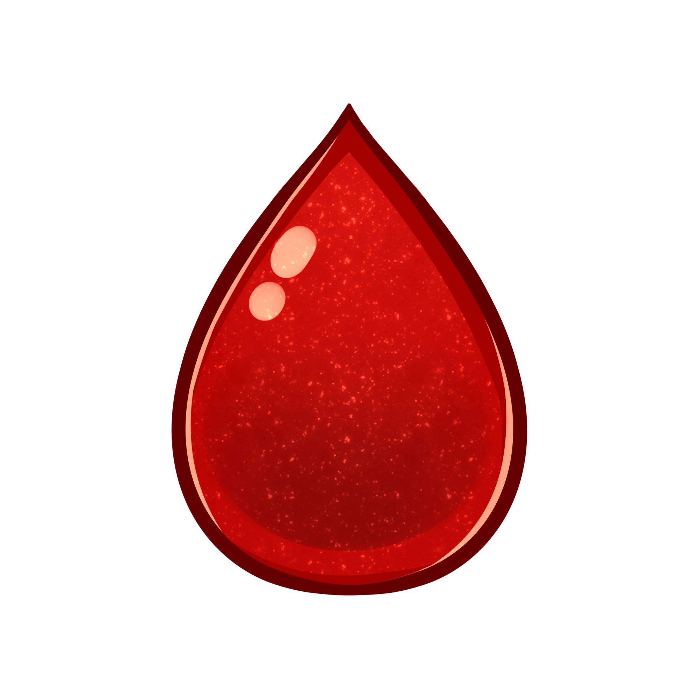

Tiêu chuẩn nồng độ oxy trong máu và nhịp tim của người bình thường là bao nhiêu?
Tại sao phải đo nhịp tim và nồng độ oxy trong máu?
Việc theo dõi và đánh giá nồng độ oxy trong máu liên tục là biện pháp cần thiết và hiệu quả trong việc theo dõi sức khỏe người bệnh. Khi bạn biết được nồng độ oxy trong máu, bạn sẽ đánh giá được tình trạng cơ thể của mình, xây dựng chế độ ăn uống, mục tiêu thể dục, cường độ tập luyện phù hợp. Khi kết hợp chỉ số nồng độ oxy trong máu cùng với nhịp tim, bạn sẽ đo lường được mức độ sức khỏe của bản thân và đánh giá được mức độ hiệu quả trong chương trình tập luyện
Nồng độ oxy trong máu và nhịp tim của người bình thường là bao nhiêu?
Chỉ số nồng độ oxy trong máu được biểu thị bằng %. Khi thiết bị oxy cho ra chỉ số 97%, có nghĩa là mỗi tế bào hồng cầu được tạo bởi 97% oxygenated và 3% không oxy hóa hemoglobin. Chỉ số SpO2 ở người bình thường dao động từ 95% - 100%. Nếu chỉ số SpO2 thấp hơn 95%, có nghĩa là cơ thể đang trong tình trạng thiếu máu thiếu oxy. Mức thang đo chỉ số nồng độ oxy tiêu chuẩn: Chỉ số oxy trong máu tốt dao động từ 97 - 99%. Chỉ số oxy trong máu trung bình: 94 - 96%. Chỉ số oxy trong máu thấp, cần xin ý kiến của bác sĩ chủ trị: 90% - 93%. Dấu hiệu suy hô hấp rất nặng: Dưới 92% nếu không thở oxy và dưới 95% nếu có thở oxy. Tình trạng nguy hiểm: Dưới 90%. Nhịp tim của người bình thường sẽ dao động từ 60 - 100 nhịp/phút. Theo các chuyên gia, một trái tim khỏe mạnh sẽ có nhịp đập từ 60 - 80 nhịp/phút.
Yếu tố ảnh hưởng khi đo nồng độ oxy trong máu và nhịp tim?
Nồng độ oxy trong máu: Các máy đo sẽ không cho ra được kết quả chính xác 100%, độ sai lệch của thiết bị rơi vào ± 2%. Hemoglobin bất thường. Cử động khi đo. Tình trạng giảm tưới máu mô do choáng, hạ thân nhiệt nặng. Bị nhiễu ánh sáng khi đo. Sắc độ của móng tay, móng chân. Nhịp tim: Nên đo nhịp tim lúc nghỉ ngơi vì đây là lúc tim hoạt động bình thường và ổn định, không bị ảnh hưởng bởi vận động. Sự co mạch, thúc đẩy máu tĩnh mạch về tim. Không nên đo khi đang đứng.
Thông tin tham khảo tại Link bài viết tham khảo.
Thông báo
HEART RATE
bpm
SPO2
%
AMBIENT

°C
OBJECT
°C
Nhiệt độ cơ thể người bình thường là bao nhiêu?
Cơ thể của chúng ta có khả năng tự điều hòa thân nhiệt để phù hợp với môi trường sống và hoạt động cá nhân. Nhiệt độ cơ thể bình thường sẽ từ 36 độ C - 37,5 độ C và nhiệt độ trung bình là ở khoảng 36,8 độ C.
Các yếu tố ảnh hưởng đến nhiệt độ cơ thể
Tuổi tác Ở các bé nhỏ, nhiệt độ cơ thể sẽ cao hơn một chút so với người lớn, bởi vì trung khu điều hoà thân nhiệt ở trẻ nhỏ chưa phát triển hoàn chỉnh. Còn ở người già, thân nhiệt của họ lại thấp hơn so với những người trẻ do khả năng vận động, nhu cầu chuyển hoá và hấp thu kém. Ngoài ra, cứ sau khoảng 10 năm thì thân nhiệt con người sẽ có sự giảm nhẹ. Nội tiết tố ở phụ nữ Sự thay đổi hàm lượng nội tiết tố ở phụ nữ khi ở kỳ kinh nguyệt, kỳ rụng trứng hoặc giai đoạn mang thai sẽ làm tăng nhiệt độ cơ thể, từ 0,3 đến 0,8 độ C tùy trường hợp. Hoạt động nhiều Việc vận động mạnh, sử dụng thể lực nhiều có thể khiến nhiệt độ ở trực tràng tăng. Thời gian đo nhiệt độ cơ thể Nhiệt độ cơ thể người sẽ thay đổi theo thời gian trong ngày, từ 0,5°C - 1°C. Thông thường, thân nhiệt sẽ ở mức thấp nhất vào lúc sáng sớm và cao nhất sau 6 giờ chiều. Vị trí đo nhiệt độ cơ thể Kết quả đo nhiệt độ có thể khác nhau tùy theo vị trí mà bạn chọn để đo thân nhiệt.
Thông tin tham khảo tại Link bài viết tham khảo.